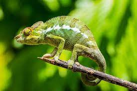
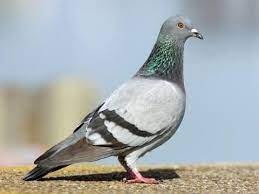

Origami Designs
About us
Follow us

Interesting facts about Camel
- There are two types of camels: One humped or “dromedary” camels and two humped Bactrian camels.
- Camels have three sets of eyelids and two rows of eyelashes to keep sand out of their eyes.
- Camels have thick lips which let them forage for thorny plants other animals can't eat.

Interesting facts about Chameleon
- Chameleons have eyes in the backs of their heads
- Chameleons come in a lot of different shapes and sizes
- Chameleons have extremely powerful tongues

Interesting facts about Pigeon
- Pigeons are renowned for their outstanding navigational abilities.
- Pigeons are highly sociable animals.
- Pigeons were known to be faster than telegraph messages.

Interesting facts about Teddy bear
- Teddy bears got their name from the story that Teddy Roosevelt refused to shoot a bear cub while on a hunting trip in 1902.
- The first toy stuffed bear was created by German toymaker Margarete Steiff.
She created a soft plush with movable arms and legs and a friendly face after taking her nephew to the zoo in 1903.

Interesting facts about Pandas
- Their eyes are different to normal bears.
- They have great camouflage for their environment.
- Giant pandas are good at climbing trees and can also swim.